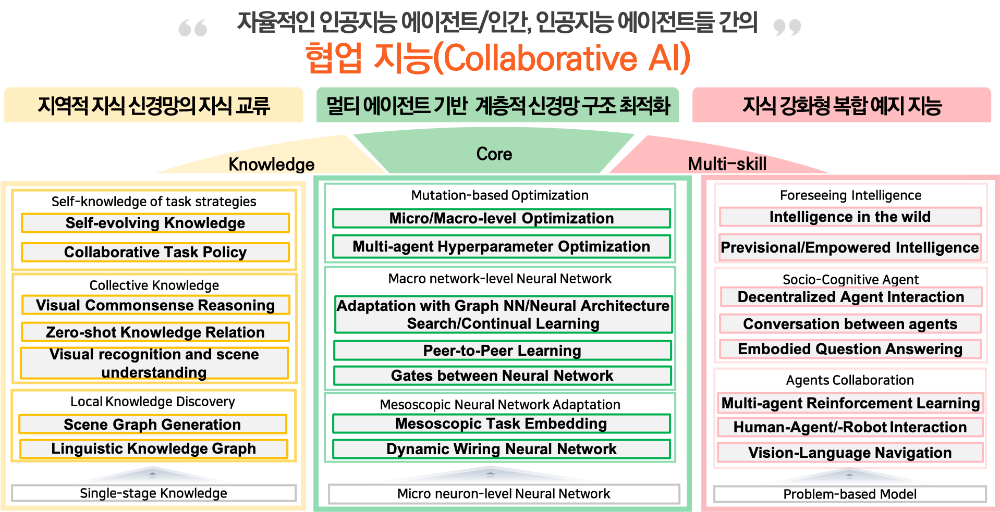
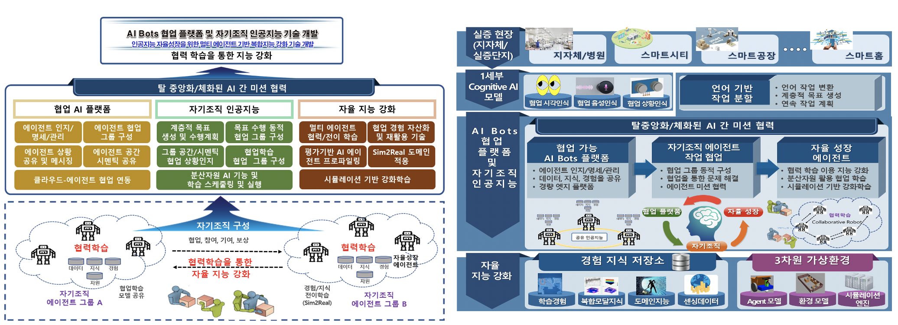

총괄: 인공지능 자율성장을 위한 멀티 에이전트 기반 복합지능 강화 기술 개발


(1세부) 인공지능 에이전트 협업기반 신경망 변이 및 지능 강화 기술 개발

(2세부) AI Bots 협업 플랫폼 및 자기조직 인공지능 기술 개발

연구실적(논문/학술대회)
[International Journals]
[International Conferences]
- SangMook Kim, SangMin Bae, Se-Young Yun, Hwanjun Song, “LG-FAL : Federated Active Learning Strategy using Local and Global Models”, ICML 2022 [Link]
- SangMook Kim, Wonyoung Shin, Soohyuk Jang, Hwanjun Song, Se-Young Yun, “FedRN: Exploiting k-Reliable Neighbors Towards Robust Federated Learning”, CIKM 2022 [Link]
- Jaehoon Oh, Sungnyun Kim, Namgyu Ho, Jin-Hwa Kim, Hwanjun Son, Se-Young Yun, “Understanding Cross-Domain Few-Shot Learning Based on Domain Similarity and Few-Shot Difficulty”, NeurIPS 2022 [Link]
- Chunyuan Li, Haotian Liu, Liunian Harold Li, Pengchuan Zhang, Jyoti Aneja, Jianwei Yang, Ping Jin, Houdong Hu, Zicheng Liu, Yong Jae Lee, Jianfeng Gao, “ELEVATER: A Benchmark and Toolkit for Evaluating Language-Augmented Visual Models”, NeurIPS 2022, [Link]
[Domestic Journals]
[Domestic Conferences]
- 김상묵, 배상민, 엄성하, 윤세영, “연합학습에서 클래스 균형을 고려한 디바이스 스케줄링 알고리즘”, 한국컴퓨터종합학술대회, pp. 846-848, 2022. [Link]
- 이정현, 정민찬, 허남규, 윤세영, “그래프 신경망의 확률적 경사 소음의 통계적 분석”, 한국컴퓨터종합학술대회, pp. 1025-1027, 2022. [Link]
[Promotions]
- Workshop on Computer Vision in the Wild, ECCV 2022,[Link]
[Open SW]
- ELEVATER(Evaluation of Language-augmented Visual Task-level Transfer),[Link]
Acknowledgement
This work was supported by Institute for Information &
Communications Technology Promotion (IITP) grant funded
by the Korea government (MSIT) [No.2022-0-00871, Development of AI Autonomy and Knowledge Enhancement for AI Agent Collaboration], [No.2022-0-00907, Development of AI Bots Collaboration Platform and Self-organizing AI].

기술문의: 이용주 시각지능연구실장 (yongju@etri.re.kr) , 강동오 책임연구원 (dongoh@etri.re.kr)